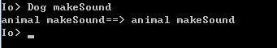
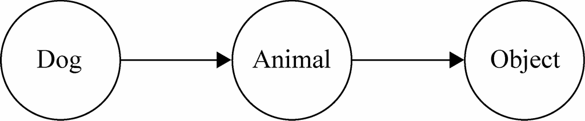

在Brendan Eich为JavaScript设计面向对象系统时，借鉴了Self和Smalltalk这两门基于原型的语言。之所以选择基于原型的面向对象系统，并不是因为时间匆忙，它设计起来相对简单，而是因为从一开始Brendan Eich就没有打算在JavaScript中加入类的概念。
在以类为中心的面向对象编程语言中，类和对象的关系可以想象成铸模和铸件的关系，对象总是从类中创建而来。而在原型编程的思想中，类并不是必需的，对象未必需要从类中创建而来，一个对象是通过克隆另外一个对象所得到的。就像电影《第六日》一样，通过克隆可以创造另外一个一模一样的人，而且本体和克隆体看不出任何区别。
原型模式不单是一种设计模式，也被称为一种编程泛型。
本节我们将首先学习第一个设计模式——原型模式。随后会了解基于原型的Io语言，借助对Io语言的了解，我们对JavaScript的面向对象系统也将有更深的认识。在本节的最后，我们将详细了解JavaScript语言如何通过原型来构建一个面向对象系统。
从设计模式的角度讲，原型模式是用于创建对象的一种模式，如果我们想要创建一个对象，一种方法是先指定它的类型，然后通过类来创建这个对象。原型模式选择了另外一种方式，我们不再关心对象的具体类型，而是找到一个对象，然后通过克隆来创建一个一模一样的对象。
既然原型模式是通过克隆来创建对象的，那么很自然地会想到，如果需要一个跟某个对象一模一样的对象，就可以使用原型模式。
假设我们在编写一个飞机大战的网页游戏。某种飞机拥有分身技能，当它使用分身技能的时候，要在页面中创建一些跟它一模一样的飞机。如果不使用原型模式，那么在创建分身之前，无疑必须先保存该飞机的当前血量、炮弹等级、防御等级等信息，随后将这些信息设置到新创建的飞机上面，这样才能得到一架一模一样的新飞机。
如果使用原型模式，我们只需要调用负责克隆的方法，便能完成同样的功能。
原型模式的实现关键，是语言本身是否提供了clone方法。ECMAScript 5提供了Object.create方法，可以用来克隆对象。代码如下：
var Plane = function(){
this.blood = 100;
this.attackLevel = 1;
this.defenseLevel = 1;
};
var plane = new Plane();
plane.blood = 500;
plane.attackLevel = 10;
plane.defenseLevel = 7;
var clonePlane = Object.create( plane );
console.log( clonePlane ); // 输出：Object {blood: 500, attackLevel: 10, defenseLevel: 7}
在不支持Object.create方法的浏览器中，则可以使用以下代码：
Object.create = Object.create || function( obj ){
var F = function(){};
F.prototype = obj;
return new F();
}
通过上一节的代码，我们看到了如何通过原型模式来克隆出一个一模一样的对象。但原型模式的真正目的并非在于需要得到一个一模一样的对象，而是提供了一种便捷的方式去创建某个类型的对象，克隆只是创建这个对象的过程和手段。
在用Java等静态类型语言编写程序的时候，类型之间的解耦非常重要。依赖倒置原则提醒我们创建对象的时候要避免依赖具体类型，而用new XXX创建对象的方式显得很僵硬。工厂方法模式和抽象工厂模式可以帮助我们解决这个问题，但这两个模式会带来许多跟产品类平行的工厂类层次，也会增加很多额外的代码。
原型模式提供了另外一种创建对象的方式，通过克隆对象，我们就不用再关心对象的具体类型名字。这就像一个仙女要送给三岁小女孩生日礼物，虽然小女孩可能还不知道飞机或者船怎么说，但她可以指着商店橱柜里的飞机模型说“我要这个”。
当然在JavaScript这种类型模糊的语言中，创建对象非常容易，也不存在类型耦合的问题。从设计模式的角度来讲，原型模式的意义并不算大 。但JavaScript本身是一门基于原型的面向对象语言，它的对象系统就是使用原型模式来搭建的，在这里称之为原型编程范型也许更合适。
前面说过，原型模式不仅仅是一种设计模式，也是一种编程范型。JavaScript就是使用原型模式来搭建整个面向对象系统的。在JavaScript语言中不存在类的概念，对象也并非从类中创建出来的，所有的JavaScript对象都是从某个对象上克隆而来的。
对于习惯了以类为中心语言的人来说，也许一时不容易理解这种基于原型的语言。即使是对于JavaScript语言的熟练使用者而言，也可能会有一种“不识庐山真面目，只缘身在此山中”的感觉。事实上，使用原型模式来构造面向对象系统的语言远非仅有JavaScript一家。
JavaScript基于原型的面向对象系统参考了Self语言和Smalltalk语言，为了搞清JavaScript中的原型，我们本该寻根溯源去瞧瞧这两门语言。但由于这两门语言距离现在实在太遥远，我们不妨转而了解一下另外一种轻巧又基于原型的语言——Io语言。
Io语言在2002年由Steve Dekorte发明。可以从http://iolanguage.com下载到Io语言的解释器，安装好之后打开Io解释器，输入经典的“Hello World”程序。解释器打印出了Hello World的字符串，这说明我们已经可以使用Io语言来编写一些小程序了，如图1-1所示。
图 1-1
作为一门基于原型的语言，Io中同样没有类的概念，每一个对象都是基于另外一个对象的克隆。
就像吸血鬼的故事里必然有一个吸血鬼祖先一样，既然每个对象都是由其他对象克隆而来的，那么我们猜测Io语言本身至少要提供一个根对象，其他对象都发源于这个根对象。这个猜测是正确的，在Io中，根对象名为Object。
这一节我们依然拿动物世界的例子来讲解Io语言。在下面的代码中，通过克隆根对象Object，就可以得到另外一个对象Animal。虽然Animal是以大写开头的，但是记住Io中没有类，Animal跟所有的数据一样都是对象。
Animal := Object clone // 克隆动物对象
现在通过克隆根对象Object得到了一个新的Animal对象，所以Object就被称为Animal的原型。目前Animal对象和它的原型Object对象一模一样，还没有任何属于它自己方法和能力。我们假设在Io的世界里，所有的动物都会发出叫声，那么现在就给Animal对象添加makeSound方法吧。代码如下：
Animal makeSound := method( "animal makeSound " print );
好了，现在所有的动物都能够发出叫声了，那么再来继续创建一个Dog对象。显而易见，Animal对象可以作为Dog对象的原型，Dog对象从Animal对象克隆而来：
Dog := Animal clone
可以确定，Dog一定懂得怎么吃食物，所以接下来给Dog对象添加eat方法：
Dog eat := method( "dog eat " print );
现在已经完成了整个动物世界的构建，通过一次次克隆，Io的对象世界里不再只有形单影只的根对象Object，而是多了两个新的对象：Animal对象和Dog对象。其中Dog的原型是Animal，Animal对象的原型是Object。最后我们来测试Animal对象和Dog对象的功能。
先尝试调用Animal的makeSound方法，可以看到，动物顺利发出了叫声：
Animal makeSound // 输出：animal makeSound
然后再调用Dog的eat方法，同样我们也看到了预期的结果：
Dog eat // 输出：dog eat
从上一节的讲解中，我们看到了如何在Io语言中从无到有地创建一些对象。跟使用“类”的语言不一样的地方是，Io语言中最初只有一个根对象Object，其他所有的对象都克隆自另外一个对象。如果A对象是从B对象克隆而来的，那么B对象就是A对象的原型。
在上一小节的例子中，Object是Animal的原型，而Animal是Dog的原型，它们之间形成了一条原型链。这个原型链是很有用处的，当我们尝试调用Dog对象的某个方法时，而它本身却没有这个方法，那么Dog对象会把这个请求委托给它的原型Animal对象，如果Animal对象也没有这个属性，那么请求会顺着原型链继续被委托给Animal对象的原型Object对象，这样一来便能得到继承的效果，看起来就像Animal是Dog的“父类”，Object是Animal的“父类”。
这个机制并不复杂，却非常强大，Io和JavaScript一样，基于原型链的委托机制就是原型继承的本质。
我们来进行一些测试。在Io的解释器中执行Dog makeSound时，Dog对象并没有makeSound方法，于是把请求委托给了它的原型Animal对象 ，而Animal对象是有makeSound方法的，所以该条语句可以顺利得到输出，如图1-2所示。

图 1-2
现在我们明白了原型编程中的一个重要特性，即当对象无法响应某个请求时，会把该请求委托给它自己的原型。
最后整理一下本节的描述，我们可以发现原型编程范型至少包括以下基本规则。
所有的数据都是对象。
要得到一个对象，不是通过实例化类，而是找到一个对象作为原型并克隆它。
对象会记住它的原型。
如果对象无法响应某个请求，它会把这个请求委托给它自己的原型。
刚刚我们已经体验过同样是基于原型编程的Io语言，也已经了解了在Io语言中如何通过原型链来实现对象之间的继承关系。在原型继承方面，JavaScript的实现原理和Io语言非常相似，JavaScript也同样遵守这些原型编程的基本规则。
所有的数据都是对象。
要得到一个对象，不是通过实例化类，而是找到一个对象作为原型并克隆它。
对象会记住它的原型。
如果对象无法响应某个请求，它会把这个请求委托给它自己的原型。
下面我们来分别讨论JavaScript是如何在这些规则的基础上来构建它的对象系统的。
1. 所有的数据都是对象
JavaScript在设计的时候，模仿Java引入了两套类型机制：基本类型和对象类型。基本类型包括undefined、number、boolean、string、function、object。从现在看来，这并不是一个好的想法。
按照JavaScript设计者的本意，除了undefined之外，一切都应是对象。为了实现这一目标，number、boolean、string这几种基本类型数据也可以通过“包装类”的方式变成对象类型数据来处理。
我们不能说在JavaScript中所有的数据都是对象，但可以说绝大部分数据都是对象。那么相信在JavaScript中也一定会有一个根对象存在，这些对象追根溯源都来源于这个根对象。
事实上，JavaScript中的根对象是Object.prototype对象。Object.prototype对象是一个空的对象。我们在JavaScript遇到的每个对象，实际上都是从Object.prototype对象克隆而来的，Object.prototype对象就是它们的原型。比如下面的obj1对象和obj2对象：
var obj1 = new Object();
var obj2 = {};
可以利用ECMAScript 5提供的Object.getPrototypeOf来查看这两个对象的原型：
console.log( Object.getPrototypeOf( obj1 ) === Object.prototype ); // 输出：true
console.log( Object.getPrototypeOf( obj2 ) === Object.prototype ); // 输出：true
2. 要得到一个对象，不是通过实例化类，而是找到一个对象作为原型并克隆它
在Io语言中，克隆一个对象的动作非常明显，我们可以在代码中清晰地看到clone的过程。比如以下代码：
Dog := Animal clone
但在JavaScript语言里，我们并不需要关心克隆的细节，因为这是引擎内部负责实现的。我们所需要做的只是显式地调用var obj1 = new Object()或者var obj2 = {}。此时，引擎内部会从Object.prototype上面克隆一个对象出来，我们最终得到的就是这个对象。
再来看看如何用new运算符从构造器中得到一个对象，下面的代码我们再熟悉不过了：
function Person( name ){
this.name = name;
};
Person.prototype.getName = function(){
return this.name;
};
var a = new Person( 'sven' )
console.log( a.name ); // 输出：sven
console.log( a.getName() ); // 输出：sven
console.log( Object.getPrototypeOf( a ) === Person.prototype ); // 输出：true
在JavaScript中没有类的概念，这句话我们已经重复过很多次了。但刚才不是明明调用了new Person()吗？
在这里Person并不是类，而是函数构造器，JavaScript的函数既可以作为普通函数被调用，也可以作为构造器被调用。当使用new运算符来调用函数时，此时的函数就是一个构造器。 用new运算符来创建对象的过程，实际上也只是先克隆Object.prototype对象，再进行一些其他额外操作的过程。5
5JavaScript是通过克隆Object.prototype来得到新的对象，但实际上并不是每次都真正地克隆了一个新的对象。从内存方面的考虑出发，JavaScript还做了一些额外的处理，具体细节可以参阅周爱民老师编著的《JavaScript语言精髓与编程实践》。这里不做深入讨论，我们暂且把创建对象的过程看成完完全全的克隆。
在Chrome和Firefox等向外暴露了对象__proto__属性的浏览器下，我们可以通过下面这段代码来理解new运算的过程：
function Person( name ){
this.name = name;
};
Person.prototype.getName = function(){
return this.name;
};
var objectFactory = function(){
var obj = new Object(), // 从Object.prototype上克隆一个空的对象
Constructor = [].shift.call( arguments ); // 取得外部传入的构造器，此例是Person
obj.__proto__ = Constructor.prototype; // 指向正确的原型
var ret = Constructor.apply( obj, arguments ); // 借用外部传入的构造器给obj设置属性
return typeof ret === 'object' ? ret : obj; // 确保构造器总是会返回一个对象
};
var a = objectFactory( Person, 'sven' );
console.log( a.name ); // 输出：sven
console.log( a.getName() ); // 输出：sven
console.log( Object.getPrototypeOf( a ) === Person.prototype ); // 输出：true
我们看到，分别调用下面两句代码产生了一样的结果：
var a = objectFactory( A, 'sven' );
var a = new A( 'sven' );
3. 对象会记住它的原型
如果请求可以在一个链条中依次往后传递，那么每个节点都必须知道它的下一个节点。同理，要完成Io语言或者JavaScript语言中的原型链查找机制，每个对象至少应该先记住它自己的原型。
目前我们一直在讨论“对象的原型”，就JavaScript的真正实现来说，其实并不能说对象有原型，而只能说对象的构造器有原型。对于“对象把请求委托给它自己的原型”这句话，更好的说法是对象把请求委托给它的构造器的原型。那么对象如何把请求顺利地转交给它的构造器的原型呢？
JavaScript给对象提供了一个名为__proto__的隐藏属性，某个对象的__proto__属性默认会指向它的构造器的原型对象，即{Constructor}.prototype。在一些浏览器中，__proto__被公开出来，我们可以在Chrome或者Firefox上用这段代码来验证：
var a = new Object();
console.log ( a.__proto__=== Object.prototype ); // 输出：true
实际上，__proto__就是对象跟“对象构造器的原型”联系起来的纽带。正因为对象要通过__proto__属性来记住它的构造器的原型，所以我们用上一节的objectFactory函数来模拟用new创建对象时， 需要手动给obj对象设置正确的__proto__指向。
obj.__proto__ = Constructor.prototype;
通过这句代码，我们让obj.__proto__ 指向Person.prototype，而不是原来的Object.prototype。
4. 如果对象无法响应某个请求，它会把这个请求委托给它的构造器的原型
这条规则即是原型继承的精髓所在。从对Io语言的学习中，我们已经了解到，当一个对象无法响应某个请求的时候，它会顺着原型链把请求传递下去，直到遇到一个可以处理该请求的对象为止。
JavaScript的克隆跟Io语言还有点不一样，Io中每个对象都可以作为原型被克隆，当Animal对象克隆自Object对象，Dog对象又克隆自Animal对象时，便形成了一条天然的原型链，如图1-3所示。

图 1-3
而在JavaScript中，每个对象都是从Object.prototype对象克隆而来的，如果是这样的话，我们只能得到单一的继承关系，即每个对象都继承自Object.prototype对象，这样的对象系统显然是非常受限的。
实际上，虽然JavaScript的对象最初都是由Object.prototype对象克隆而来的，但对象构造器的原型并不仅限于Object.prototype上，而是可以动态指向其他对象。这样一来，当对象a需要借用对象b的能力时，可以有选择性地把对象a的构造器的原型指向对象b，从而达到继承的效果。下面的代码是我们最常用的原型继承方式：
var obj = { name: 'sven' };
var A = function(){};
A.prototype = obj;
var a = new A();
console.log( a.name ); // 输出：sven
我们来看看执行这段代码的时候，引擎做了哪些事情。
首先，尝试遍历对象a中的所有属性，但没有找到name这个属性。
查找name属性的这个请求被委托给对象a的构造器的原型，它被a.__proto__ 记录着并且指向A.prototype，而A.prototype被设置为对象obj。
在对象obj中找到了name属性，并返回它的值。
当我们期望得到一个“类”继承自另外一个“类”的效果时，往往会用下面的代码来模拟实现：
var A = function(){};
A.prototype = { name: 'sven' };
var B = function(){};
B.prototype = new A();
var b = new B();
console.log( b.name ); // 输出：sven
再看这段代码执行的时候，引擎做了什么事情。
首先，尝试遍历对象b中的所有属性，但没有找到name这个属性。
查找name属性的请求被委托给对象b的构造器的原型，它被b.__proto__ 记录着并且指向B.prototype，而B.prototype被设置为一个通过new A()创建出来的对象。
在该对象中依然没有找到name属性，于是请求被继续委托给这个对象构造器的原型A.prototype。
在A.prototype中找到了name属性，并返回它的值。
和把B.prototype直接指向一个字面量对象相比，通过B.prototype = new A()形成的原型链比之前多了一层。但二者之间没有本质上的区别，都是将对象构造器的原型指向另外一个对象，继承总是发生在对象和对象之间。
最后还要留意一点，原型链并不是无限长的。现在我们尝试访问对象a的address属性。而对象b和它构造器的原型上都没有address属性，那么这个请求会被最终传递到哪里呢？
实际上，当请求达到A.prototype，并且在A.prototype中也没有找到address属性的时候，请求会被传递给A.prototype的构造器原型Object.prototype，显然Object.prototype中也没有address属性，但Object.prototype的原型是null，说明这时候原型链的后面已经没有别的节点了。所以该次请求就到此打住，a.address返回undefined。
a.address // 输出：undefined
设计模式在很多时候其实都体现了语言的不足之处。Peter Norvig曾说，设计模式是对语言不足的补充，如果要使用设计模式，不如去找一门更好的语言。这句话非常正确。不过，作为Web前端开发者，相信JavaScript在未来很长一段时间内都是唯一的选择。虽然我们没有办法换一门语言，但语言本身也在发展，说不定哪天某个模式在JavaScript中就已经是天然的存在，不再需要拐弯抹角来实现。比如Object.create就是原型模式的天然实现。使用Object.create来完成原型继承看起来更能体现原型模式的精髓。目前大多数主流浏览器都提供了Object.create方法。
但美中不足是在当前的JavaScript引擎下，通过Object.create来创建对象的效率并不高，通常比通过构造函数创建对象要慢。此外还有一些值得注意的地方，比如通过设置构造器的prototype来实现原型继承的时候，除了根对象Object.prototype本身之外，任何对象都会有一个原型。而通过Object.create( null )可以创建出没有原型的对象。
另外，ECMAScript 6带来了新的Class语法。这让JavaScript看起来像是一门基于类的语言，但其背后仍是通过原型机制来创建对象。通过Class创建对象的一段简单示例代码6如下所示 ：
6这段代码来自http://jurberg.github.io/blog/2014/07/12/javascript-prototype/。
class Animal {
constructor(name) {
this.name = name;
}
getName() {
return this.name;
}
}
class Dog extends Animal {
constructor(name) {
super(name);
}
speak() {
return "woof";
}
}
var dog = new Dog("Scamp");
console.log(dog.getName() + ' says ' + dog.speak());
本节讲述了本书的第一个设计模式——原型模式。原型模式是一种设计模式，也是一种编程泛型，它构成了JavaScript这门语言的根本。本节首先通过更加简单的Io语言来引入原型模式的概念，随后学习了JavaScript中的原型模式。原型模式十分重要，和JavaScript开发者的关系十分密切。通过原型来实现的面向对象系统虽然简单，但能力同样强大。